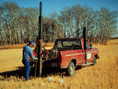
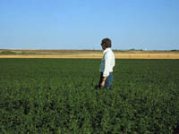
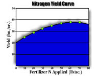

|

|
| Successful farm management on the prairies requires the regular addition of fertilizers to maintain crop yields and quality. How much fertilizer do we apply and what kind of fertilizer is needed to give a balanced nutrition? These are questions that much be answered if we are not to waste cash or pollute. Soil and plant testing are the usual means to diagnosing nutrient deficiency and recognizing soils with physical and chemical problems. Recommendations on fertilizer application rates are often given as part of the test. These recommendations are usually based on numerous fertilizer field trials that have been conducted over the years. We must remember that soil and plant tests are only approximate and recommendations are based on wide areas often soil zones. Modern technological advances in precision farming employ measuring devices on combines and fertilizer applicators which when tied into GPS locations via on board computers. The machinery can then vary fertilization rates according to recordings of previous yields as they were seen to vary over the land surface. | |||||||||||||||||||||||||||||||||||||||||||||||||||||||||
 Soil Testing Soil testing involves five procedures:
Sampling the Field. The most obvious question is how big an area can be sampled for the soil test? Normally a single field that or an area of about 100 acres that has a similar management history. If the area has large differences in topography or problem areas such as salinity then the field should be subdivided into smaller common areas - each subjected to its own test and recommendations. As shown in the diagram 10 to 15 cores (a half kg of soil or so) are taken using as soil probe or small shovel. Atypical areas are avoided such as ant hills, saline areas, old manure dumps etc. It is always a good idea to record your sampling spots on a map for future reference. Some soil testing laboratories may require samples taken from different depths, e.g. 0-15 cm surface sample,and a 15-60 cm subsoil sample. This is important for nutrients such as nitrogen and sulphur which are mobile in the soil. usually a 0-30 cm sample is used for basic fertility assessment. When to sample?. Summerfallow and stubble can be sampled in late fall just before freeze-up or just before seeding in the spring. Do not sample immediately after fertilizer has been applied. Nitrogen results are usually the most variable. A heavy spring rain could wash out much of the available nitrogen from the surface layer, but it would still be available in low layers as the roots grow. A warm fall could also aid mineralization and the release of nitrogen from soil organic matter - if sampled too early then the additional nitrogen would be missed. Preparing the sample Most laboratories prefer to handled air dried samples. Soil samples must be immediately dried at room temperature by laying out on a sheet of aluminum foil or brown paper. This procedure stops nitrogen mineralization by the soil microorganisms. The dried sample can then be sent to the soil testing laboratory where it is extracted with chemicals and analyzed for available nutrients and chemical properties. Laboratory analysis. Numerous analyses are available as a pay for service basis. Common analyses include:
Results and Recommendations. Most soil testing laboratories will not only report the results of the tests but also make recommendations on fertilization rates and type of fertilizer to use for specific crops. In some instances the farmer may request the laboratory to recommend fertilization for target yields or soil building. As a final note: the cost of fertilizers often limit their use to supplying the minimum amount needed for a average crop. In some countries, however, intensive farming operations cause pollution on a massive scale as fertilizers and animal manures are washed off the land and into the water shed. | |||||||||||||||||||||||||||||||||||||||||||||||||||||||||
 Plant Analysis For an accurate measure of the nutrient supplying power of soil there is no better measure than the plant itself. Unfortunately, when the deficiency is noticed and the plant analysed it is often too late to do anything about it for rest of the growing season. So while soil tests are predictive, plant tests are diagnostic after the fact. Plant testing assumes that the concentration of a particular element or ion in the plant is related to the available level of that nutrient in the soil. There are many factors, however, that must be taken into account when interpreting plant analysis. Nutrient concentration vary with plant part, age, moisture levels, disease and even time of day. In some instances, a low level of one nutrient can cause a high level of another. Plant tissue analysis is often used to confirm our suspicions, often based on the way a plant looks or grows. For example, a spindly looking wheat plant with yellowing leaves (chlorosis) is associated with nitrogen deficiency. But beware!- disease, toxicities and other nutrient deficiencies may also produce this result. Sampling the Field. It is just as important for plant testing to sample the field in a representative manner just as in soil sampling. Collect 50 plants or so from 10 to 15 locations at a time when the plants are not stressed due to heat or excessive moisture. Contact the laboratory for instructions on sampling and handling. | |||||||||||||||||||||||||||||||||||||||||||||||||||||||||
 Fertilizer Economics The effect of fertilizers on crop growth is not linear. The most benefit comes from the first unit of fertilizer applied and the benefit decreases for each unit thereafter until no increase is observed (see diagram). Additions of fertilizer beyond this point may actually reduce yields! This basic principle of fertilizer economics is called the law of diminishing returns . As a example let us use the following table in which try to calculate the correct amount of nitrogen fertilizer to add based on the growth response curve in the diagram. We use the following concepts:
Marginal Return (MR) = 5 bu /ac x $4.00 per bu = $20.00 Ratio of MR/MC = 20.00/4.00 = 5 We have gained $5.00 for every $1.00 invested in fertilizer. At what point do we stop adding fertilizer? Usually when the MR/MC ratio is about 1.5. In this case the table would tell us that 50 lbs gives us about the right amount as 60 lbs falls below the set minimum. Soil testing laboratories have many tables such as these for every field crop and soil zone. | |||||||||||||||||||||||||||||||||||||||||||||||||||||||||